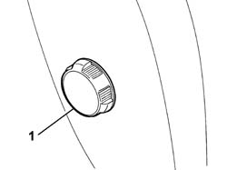
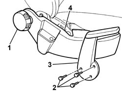
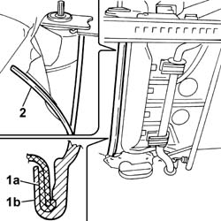
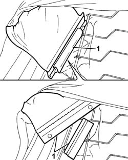
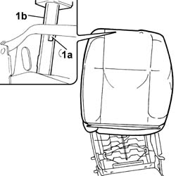

7045B06 GUIDE BUSH for (one), front seat head restraint left or right - R.R.
- Path
- Procedures > 70 FITTINGS > 7045 FRONT SEATS > 7045B front seat head restraint/arm rest > 7045B06 GUIDE BUSH for (one), front seat head restraint left or right - R.R.
- Kind
- repair procedure (removal / refitting; the operation number is the code)
- Applies to
- all engines; all production periods
- Interactive page
- https://sloeber94.github.io/elrnDB-fPnd/en/#/2753251
Applies to: all engines; all production periods
 Removing
Removing
 Refitting
Refitting7045B10 l/h or r/h front seat head restraint - r+r
7045A13 front seat with side bag r r
1. Using a cutter, remove the lumbar adjustment know which is a press fit on the backrest lumbar control device.
 | Name | Country |
|---|---|---|
- | Scraper blade | 1.878.077.000 |

Applies to: all engines; all production periods
1. Using a suitable cutter, remove the angle adjustment knob which is a press fit on the control device.
| Name | Country |
|---|---|---|
- | Scraper blade | 1.878.077.000 |
2. Undo the retaining bolts.
3. Remove the driver's seat manual height adjustment control lever.
4. Remove the inner guard from the seat, releasing the inner clips located along the perimeter of the actual guard.

Applies to: all engines; all production periods
Remove the outer seat guard, following the instructions for the inner guard, as it is also a press fit and has inner fastening clips located in the same positions.
1. Release the rods (1a) and (1b) retaining the backrest cover.
2. Start the operation from the side end.
Move the fabric and upholstery, releasing the lower part and pushing it towards the top of the seat.

Applies to: all engines; all production periods
1. Lift up the cover complete with upholstery until it is possible to access the side bag fabric reinforcement band, then release the two plastic fastening ducts.

Applies to: all engines; all production periods
Lift up the cover in order to gain access to the adjustable head restraint bushes.
1. Press the bush retaining tooth (1a) and remove both bushes (1b) pushing them upwards.

Applies to: all engines; all production periods
Refitting
RemovingCheck the condition of the guide bushes.
Fit the guide bushes in the special housings in the backrest frame and in the cover, then push them until they are correctly fitted in the housing.
Lower the cover complete with upholstery.
Adjust the backrest cover and attach the two ducts fastening the side bag reinforcement band.
Adjust the cover in the lower area and unroll the front section inwards.
Fit the backrest cover retaining rods and manually remove any creases in the fabric.
Check the condition of the attachment clips and the inner guard.
Fit the inner guard, which is a press fit, in the housing in the front seat.
Fit the front seat manual height adjustment lever and tighten the fixing bolts.
Check the condition of the engagement teeth inside the knob; if they are worn or damaged, replace the knob.
Fit the angle adjustment knob, which is a press fit, on the control device.
Check the condition of the attachment clips and the outer guard.
Fit the outer guard, which is a press fit, in the housing in the front seat.
Check the condition of the engagement teeth inside the knob; if they are worn or damaged, replace the knob.
Fit the lumbar adjustment knob, which is a press fit, on the backrest lumbar adjustment control device.